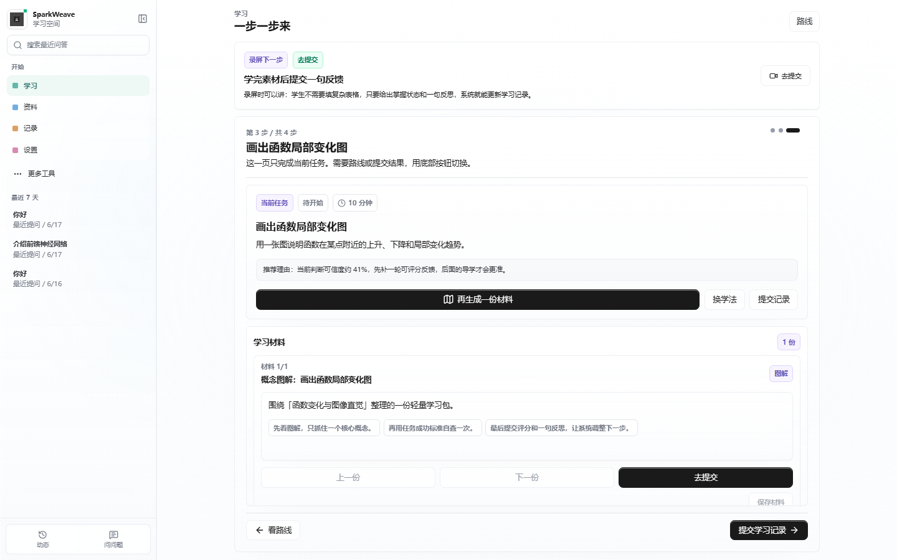
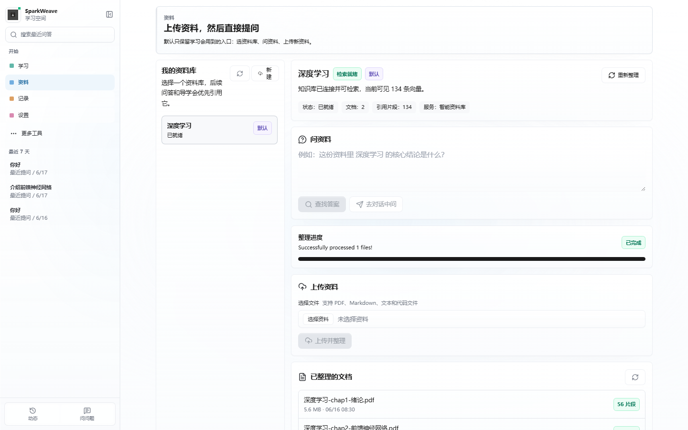
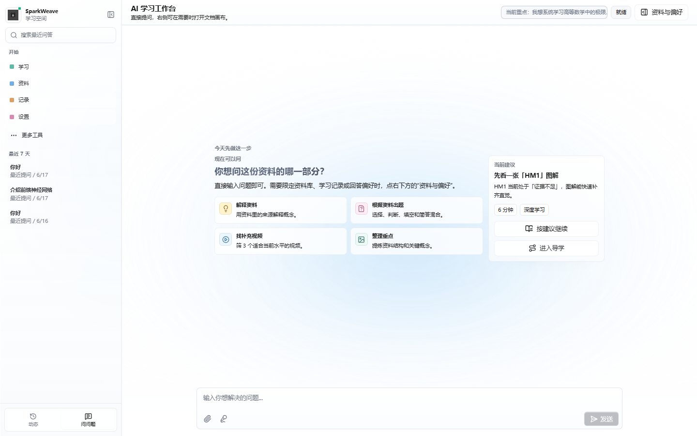
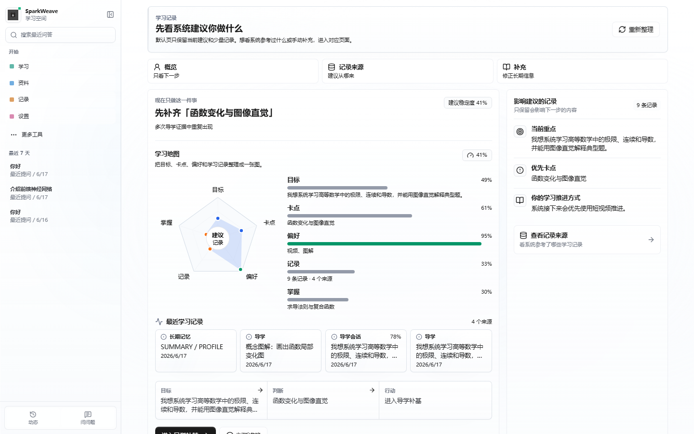
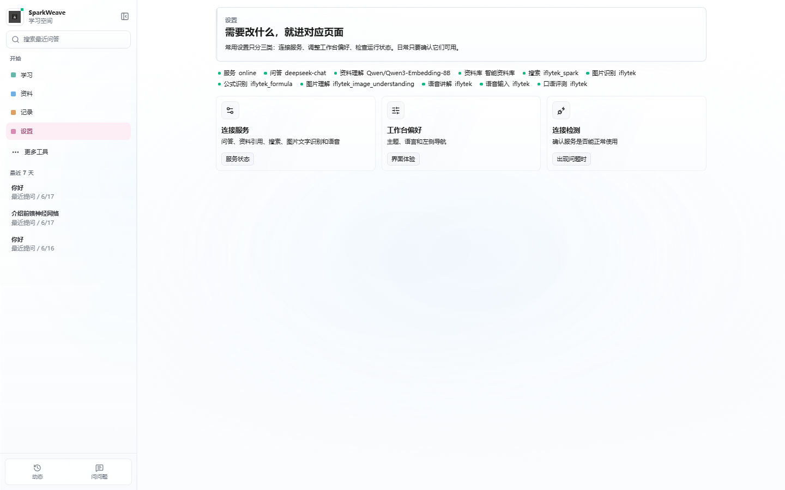
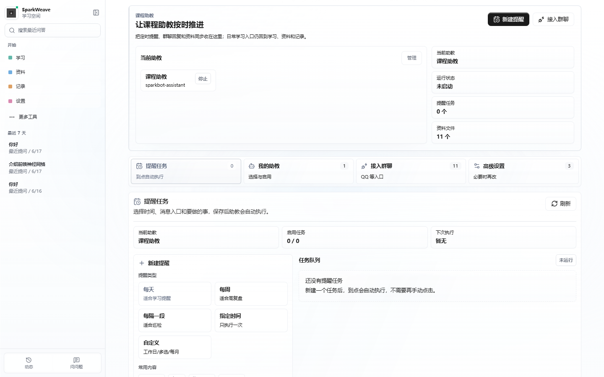

A3 基于大模型的个性化资源生成与学习多智能体系统开发
SparkWeave 星火织学
面向高校课程的多智能体学习工作台。学生从课程目标出发，系统根据资料、画像和学习记录生成路径、资源、练习和反馈；资料问答保留来源，学习结果会影响下一步建议。
项目定位
SparkWeave 把课程资料、问答、练习、学习记录、学习画像和多智能体能力收进一个低噪声的学习入口。系统优先让学生完成学习任务，而不是先研究技术配置。
核心创新点
这些创新点都能从页面追到代码。SparkWeave 把“画像 -> 资料证据 -> 智能体调度 -> 资源生成 -> 评估回写”做成一条学习链路：前端保持学习入口简单，后端用路由器、Agentic RAG、证据账本和通道层把复杂能力接起来。
| 创新点 | 技术实现 | 可核验位置 |
|---|---|---|
| Agentic RAG 质量门 | rag_support/service.py 生成 query plan 并并发检索，agentic_quality.py 判断覆盖度和相关性，agentic_repair.py 做弱分支修复或回退。 |
资料页、RAG 系统设计 |
| 证据化画像 | learner_evidence.py 写入追加式证据账本，learner_profile.py 聚合画像，profile_context.py 只把精简提示注入智能体上下文。 |
记录 / 画像页、学习画像设计 |
| 自动调度的多智能体 | LearningCapabilityRouter 结合规则、显式约束和可选 LLM intent coordinator，把任务转给解题、出题、图解、动画、研究或直接工具。 |
问问题页、智能体编排设计 |
| 课程模板和 RAG 同源 | 课程模板通过 source_materials 指向真实课件，sync_course_materials_to_kb.py 把课件同步到课程资料库。 |
深度学习课程、资料页 |
| QQ 可接入课程助教 | QQChannel 支持 QQ 私聊、群聊消息和提醒发送；未配置真实凭据时退回内存通道，Web 管理能力仍可演示。 |
课程助教页、智能体编排文档 |
| 讯飞能力嵌入场景 | 星火模型、Spark Embedding、ONE SEARCH、OCR、公式识别、图片理解、TTS、ASR、语音评测和星辰工作流分别进入资料、辅导、讲解和评估链路。 | 设置页、讯飞工具链说明 |
| 学习闭环优先 | 工程能力默认后台化，一级入口仍是学习、资料、记录、设置；结果回到任务和画像，而不是停留在一次问答结果。 | 学习页、记录页、前端设计说明 |
赛题对应
系统按 A3 赛题要求组织：对话式画像、多智能体资源生成、个性化路径、智能辅导、学习效果评估和讯飞相关工具。
| 赛题要求 | SparkWeave 中的呈现 | 可查看位置 |
|---|---|---|
| 对话式学习画像 | 目标、偏好、薄弱点、练习反馈和记录沉淀为画像，学生可校准。 | 记录 / 画像页，学习画像设计文档 |
| 多智能体资源生成 | 对话协调器按上下文自动调度检索、解题、出题、图解、动画、评估等能力，复杂资料问题先进入 Agentic RAG。 | 问问题页，智能体编排设计，RAG 系统设计 |
| 个性化路径规划 | 学习页根据课程、画像、时间预算和反馈生成当前任务与下一步建议。 | 学习页，课程模板 |
| 智能辅导 | 资料问答、图解、练习、图片/公式理解、语音讲解和可接 QQ 的课程助教进入同一学习流程。 | 资料页，问问题页，课程助教页 |
| 学习效果评估 | 练习、反思、资源使用和反馈进入学习报告，影响后续推荐。 | 学习页，记录页 |
| 讯飞相关工具 | 星火、MaaS、Embedding、ONE SEARCH、OCR、公式识别、图片理解、语音和工作流。 | 设置页，讯飞工具链说明 |
界面预览
以下图片直接引用仓库中的当前前端截图。正式材料应以当前可运行页面为准。






完整课程样例
评审演示建议使用主课程“深度学习”，文件位于 data/course_templates/deep_learning/deep_learning_foundations.json。它是一门 14 周、3 学分的高校专业课程，依据 ppts/深度学习/ 下的课件整理，从神经网络基础、CNN、注意力和 Transformer 一路走到大模型应用、无监督学习和生成模型。仓库还接入了“智能机器人系统”，文件位于 data/course_templates/intelligent_robot_systems/intelligent_robot_systems.json，课件放在 ppts/智能机器人系统/。
| 周次 | 主题 | 产出 |
|---|---|---|
| 第 1 周 | 人工智能与深度学习绪论 | AI、机器学习、深度学习关系图和学习目标卡 |
| 第 2 周 | 前馈神经网络 | 神经元、层、激活函数和损失函数结构卡 |
| 第 3 周 | 卷积神经网络 | 局部连接、卷积核和池化的图解说明 |
| 第 4 周 | 深度学习软硬件 | 训练环境与算力角色说明 |
| 第 5 周 | CNN 图像检索应用 | 图像检索流程图和特征抽取说明 |
| 第 6 周 | 多模态学习 | 文本、图像、语音模态对齐表 |
| 第 7 周 | 循环神经网络 | 序列记忆与时间展开图 |
| 第 8 周 | 注意力机制与外部记忆 | 注意力、外部记忆和 RAG 关系图 |
| 第 9 周 | Transformer 与预训练模型 | Transformer 模块图和 BERT/GPT 对比卡 |
| 第 10 周 | 大模型训练与应用 | 预训练、SFT、RLHF、RAG、Agent、CoT 流程卡 |
| 第 11 周 | 大模型应用案例复盘 | 一个大模型应用场景的任务分解和风险说明 |
| 第 12 周 | 大模型强化学习 | 奖励模型、PPO、DPO、GRPO 对比表 |
| 第 13 周 | 无监督学习 | 聚类、PCA 和降维可视化练习报告 |
| 第 14 周 | 深度生成模型与课程项目 | VAE/GAN 对比说明和课程项目报告 |
python scripts/check_course_templates.py 校验。两门课程的课件可通过 python scripts/sync_course_materials_to_kb.py --stage-only 同步到资料库原始文件区；完整服务、Milvus 和 Embedding 可用后，再用 --index 重建索引。当前提交以深度学习课程组织文档、截图和演示主线；智能机器人系统作为第二门已接入课程，用于补充验证系统对工程实践课的迁移能力。多智能体与资料证据
学生提出学习任务后，系统先合并课程、资料、画像和历史记录，再由 LearningCapabilityRouter 判断是否需要检索、解题、出题、图解、动画、研究或外部资源搜索。资料问答进入 RAG 后，还会继续走 query plan、并发分支、质量门和修复/回退。
科大讯飞工具链
讯飞能力不是单独摆在展示页里，而是嵌入资料、问答、图像题、语音讲解和学习记录中。设置页负责配置和连接检测。
| 学习环节 | 讯飞能力 | 作用 |
|---|---|---|
| 课程资料入库 | Spark Embedding、OCR for LLM | 让 PDF、扫描讲义和图片资料进入资料库。 |
| 资料问答 | 星火大模型、ONE SEARCH | 结合课程资料和公开资料生成回答。 |
| 图片和公式题 | 公式识别、图片理解、OCR | 题图、板书、截图先转成可解释内容。 |
| 资源生成 | 星火、MaaS Coding、星辰工作流 | 生成图解、练习、讲解材料和课程成果。 |
| 语音讲解 | TTS、ASR、语音评测 | 支持口述提问、音频讲解和学习效果证据。 |
项目结构
提交包由后端服务、前端工作台、课程模板、部署配置、验证文件和配套文档组成。
sparkweave/后端服务、多智能体运行时、RAG、学习画像、讯飞工具和业务能力。web/React 前端工作台，提供学习、资料、记录、设置和更多工具入口。data/course_templates/完整课程模板，满足至少一门高校专业课程的要求。docs/项目结构、功能设计、配置、数据、测试和提交边界说明。scripts/课程模板、API 合同、项目标准和发布安全检查入口。docker-compose.yml启动前端、后端、Milvus、etcd 和 minio。运行与验证
项目推荐使用 Docker Compose 启动。提交前保留源码、课程模板、配置样例和文档，不提交真实密钥、真实学生数据和本机运行数据。
docker compose up --build| 服务 | 地址 |
|---|---|
| 前端工作台 | http://localhost:3782 |
| 后端 API | http://localhost:8001 |
| API 文档 | http://localhost:8001/docs |
| Milvus Web UI | http://localhost:9091/webui/ |
轻量验证
python scripts/check_course_templates.py
python scripts/check_project_standards.py
python scripts/check_web_api_contract.py
python scripts/check_release_safety.py文档索引
这里提供 HTML 阅读版，便于连续浏览；同名 Markdown 文件仍保留，方便后续维护和版本对比。